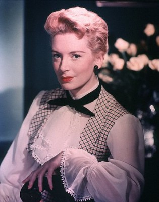
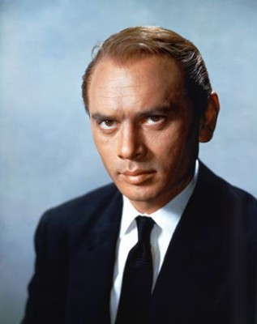

#10393 Der König von Siam
Alternativ: The King and I - Der König und ich
Auszeichnungen: 5 Oscars gewonnen für 4 Oscars nominiert 2 GoldenGlobes gewonnen


 IMDB-Wertung: 7.5 / 10
IMDB-Wertung: 7.5 / 10  Metascore: 72
Metascore: 72 
Die junge englische Witwe Anna Leonowens begibt sich Mitte des 19. Jahrhunderts mit ihrem Sohn Louis an den Hof des Königs von Siam, um dessen Kinder zu unterrichten. Ziemlich schnell stellt sich heraus, dass der der Vielweiberei fröhnende König nur wenige von Annas Ansichten teilt. Während sich beide an Starrköpfigkeit zu überbieten versuchen, kann Anna seinen Respekt und seine Zuneigung gewinnen und einen mäßigenden Einfluss auf ihn ausüben.
Jahr: 1956
Dauer: 127 Minuten
FSK: 12
Land: USA Studio: Twentieth Century-Fox Film CorporationTonspuren:
Untertitel:
Auflösung: 1080p (1920x1080) Größe: 6092 MB
Genre: Drama, Liebe, Biographie, Musical
Regisseur: Walter Lang
Drehbuch: Ernest Lehman, Oscar Hammerstein II, Margaret Landon
Soundtrack: Alfred Newman
Darsteller:
-  Deborah Kerr als Anna Leonowens
-  Yul Brynner als King Mongkut of Siam
 Rita Moreno als Tuptim
Rita Moreno als Tuptim Martin Benson als Kralahome
Martin Benson als Kralahome- Rex Thompson als Louis Leonowens
 Carlos Rivas als Lun Tha
Carlos Rivas als Lun Tha- Patrick Adiarte als Prince Chulalongkorn
- Alan Mowbray als Sir John Hay
- Geoffrey Toone als Sir Edward Ramsay
- Maureen Hingert als Royal Wife (uncredited)
- Virginia Lee als Royal Child (uncredited)
- Joycelyne Lew als Princess Ying Yaawolak (uncredited)
 Marni Nixon als Playback vocalist for Deborah Kerr (uncredited)
Marni Nixon als Playback vocalist for Deborah Kerr (uncredited)- Evelyn Rudie als Royal Child (uncredited)
- Leonard Strong als Interpreter (uncredited)
- Marie Tsien als Royal Wife (uncredited)
- Terry Saunders als Lady Thiang
- Leo Abbey als Guard (uncredited)
- Robert Banas als Keeper of the Dogs - in Play (uncredited)
- Dennis Bonilla als Mongkut's Twin Son (uncredited)
- Thomas Bonilla als Mongkut's Twin Son (uncredited)
- Jerry Chien als Royal Child (uncredited)
- Nancy Chien als Royal Child (uncredited)
- Mary Lou Clifford als Royal Wife (uncredited)
- Judy Dan als Royal Wife (uncredited)
- Gemze De Lappe als Specialty Dancer (uncredited)
- Amir Farr als Sailor (uncredited)
- Henry Fong als Guard (uncredited)
- Margaret Fukuda als Royal Wife (uncredited)
- Yvonne Garosin als Royal Child (uncredited)
- Dick Kay Hong als Royal Child (uncredited)
- Linda Hong als Royal Child (uncredited)
- Warren Hsieh als Royal Child (uncredited)
- Daro Induye als Royal Child (uncredited)
- Charles Irwin als Capt. Orton (uncredited)
- Michiko Iseri als Angel - in Play (uncredited)
- Dale Ishimoto als Crewman (uncredited)
- Kanna Ishu als Dancer (uncredited)
- Irene James als Siamese Girl (uncredited)
- Marion Jim als Simon Legree - in Play (uncredited)
- Misaye Kawasumi als Dancer (uncredited)
- Candace Lee als Royal Child (uncredited)
- Virginia Ann Lee als Royal Child (uncredited)
- Warren Lee als Royal Child (uncredited)
- Jeanette Leung als Royal Child (uncredited)
- Fuji Levi als Whipping Guard (uncredited)
- Weaver Levy als Whipping Guard (uncredited)
- Marco Lopez als Extra (uncredited)
- Edwin Luke als Messenger (uncredited)
- Stella Lynn als Royal Wife (uncredited)
Datei: X:\1950-1959\König von Siam, Der (1956, FSK12, 1920x1080).mkv seit 04.01.2019
Festplatte: Gemischt-01+Anime
 Es gibt insgesamt 141 Filme in der Gruppe '1950-1959'
Es gibt insgesamt 141 Filme in der Gruppe '1950-1959'